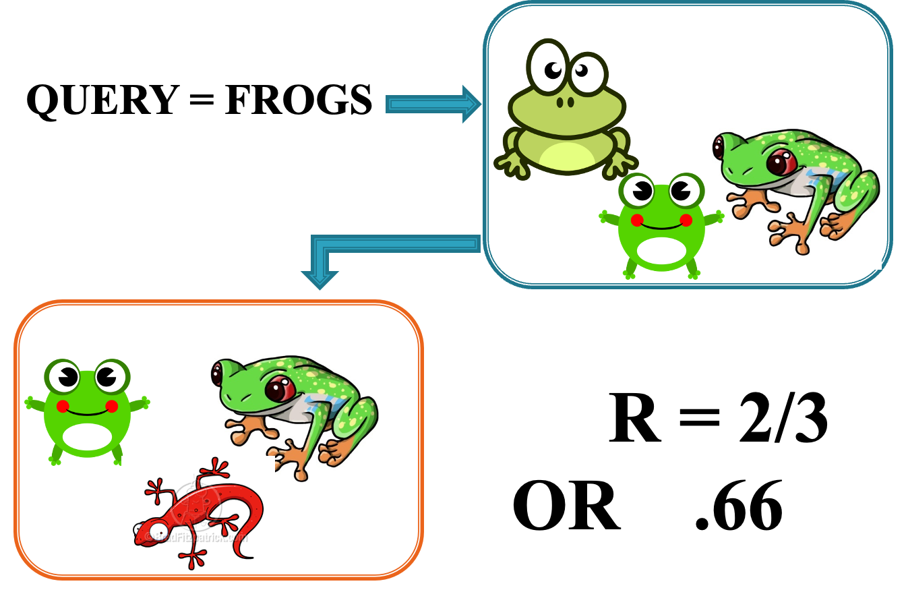
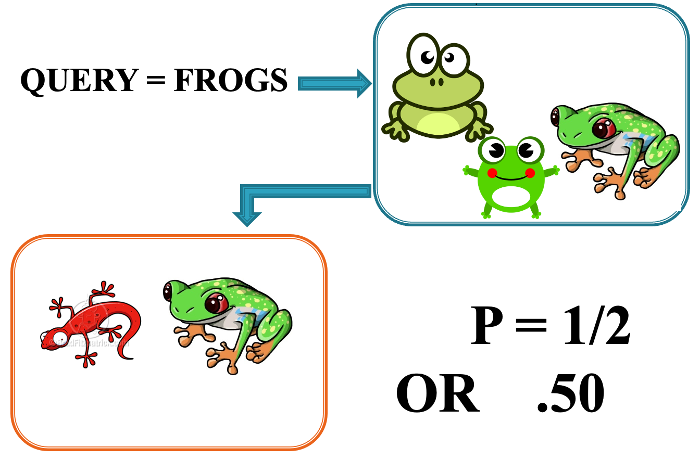

Evaluation of Information Systems
LIS 5043: Organization of Information
Dr. Manika Lamba
Introduction
Approaches to IR Evaluation
Efficiency- How economically the system is achieving its objective
- IR system storage capacity, speed, costs
- How economically the system is achieving its objective
Effectiveness- Level up to which the given system attains its stated objective(s)
- Usefulness of IR results, relevance of results, benefits to users
Usability/user studies
Evaluation Criteria
- Extent to which the system meets both the expressed and latent needs of its users
- The reasons for failure to meet user needs
- Cost-effectiveness of searches made by users versus those of intermediaries
- Are services offered appropriate for user needs? Sources available appropriate?
- Changes needed to meet users needs?
- Search features/output, interface design, scope of collection, indexing issues, etc.
Evaluation Levels: Level I
Evaluation of Effectiveness- consideration of user satisfaction
A. Cost criteria
1. Monetary cost to user
2. Other, less tangible, costs
a. Effort involved in learning to use system
b. Effort involved in access/ use
c. Effort involved in retrieving documents
d. Form of output provided by the systemEvaluation Levels: Level I
B. Time criteria
1. Time from request to retrieval of references
2. Time from request to retrieval of documents
3. Other, e.g., waiting to use system—availability of computer/speed of connectionC. Quality criteria
1. Coverage of database
2. Completeness of output (recall measure)
3. Relevance of output (precision measure)
4. Novelty output
5. Completeness and accuracy of data
6. Access to full text documents or surrogatesEvaluation Levels: Level II
Evaluation of Cost-Effectiveness- user satisfaction related to internal system efficiency and cost considerations
A. Unit cost per relevant citation retrieved
B. Unit cost per new (previously unknown) relevant citation retrieved
C. Unit cost per relevant document retrieved
Evaluation Levels: Level III
- Cost-Benefit Evaluation
- value of system balanced against costs of operating or of using it
Traditional IR Effectiveness Measures
- Recall Assesses
- Ability of system to retrieve all the relevant items it contains
- Precision assesses
- Ability of system to retrieve only the relevant items
Recall
RECALL = Relevant Documents in a IR Set/All relevant documents in the database
- A measure of how good a system is at retrieving all the relevant documents
- Inversely related to precision
- Dependent upon the users’ expectations and objectives
- Difficult to estimate
- Need to know the number of relevant documents in the entire collection

Precision
PRECISION = Relevant documents in a retrieved set/All documents in the retrieved set
- Measures how good the system is at “not” retrieving non-relevant documents
- Dependent upon user’s expectations and objectives

Other Measurement Issues
What about RELEVANCE?- Defined: ???? Cannot be precisely defined.
- Subjective
- Unique between individual and a specific document
- Can be dependent upon many factors
- Can change over time, even within same IR session
More practical or topical approach to relevance?
- Usefulness?
- Salience?
Other Measures to Consider
Fall Out Ratio: proportion of non-relevant items returned in a search to relevant itemsGenerality Ratio: proportion of relevant items in a collection for a given query
Indexing Factors Affecting IR Performance
Human Indexing
Indexing Factors Affecting IR Performance
System Factors
Other Measures to Consider
Usability Measures- How are users interacting with system?
- What features used? Why or why not used?
- Different levels of search available?
- Are all features used or does system have unneeded features?
- Return to use same system again?
- Feedback mechanism? (relevance or other?)
- Interface design measures
- ADA Compliance issues
Other Measures to Consider
Satisfaction with system- Representation scheme known?
- Syntax for entering query evident?
- Possible IR technique(s) known?
- Output issues
- Comfort Level
- Ease of use/access
- Are instructions evident? Easy to use? Easy to understand?
- Speed of input/output
Other Issues to Consider
- Electronic versus Print
- Subscription versus Web
- Copyright Issues
- Access Issues
- Price and Subscription Issues
- Vendor, Compatibility and Customization Issues
Also of Interest
- Be sure you read Chowdhury Ch-14 to learn more about the large scale IR evaluation studies conducted through the years (MEDLARS, TREC, etc.) and how results from these tests have improved IR